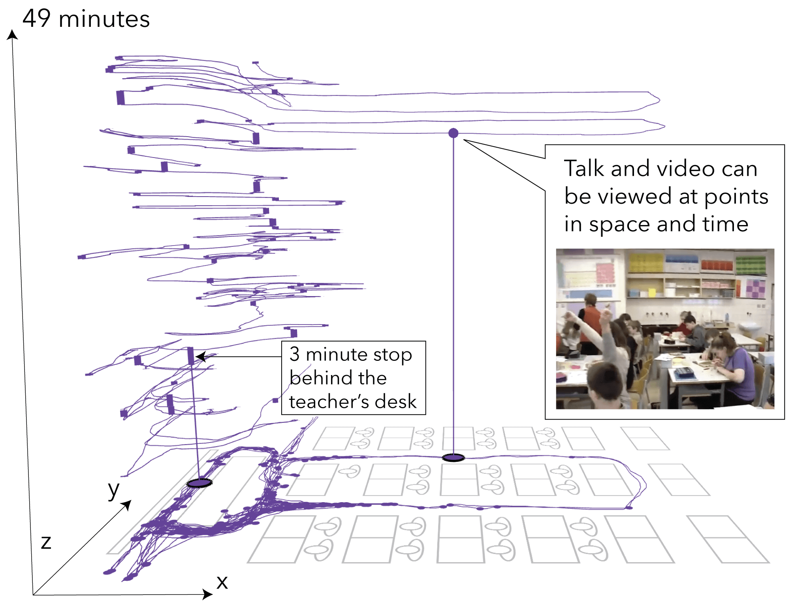

Figure 1. Annotated IGS screenshot showing a teacher’s movement over a 49-minute lesson as a purple path over a classroom floor plan and upwards in a space-time view where the z-axis encodes time, and the x/y axes correspond to the floor plan. In the space-time view, thick straight lines indicate the location and duration of stops and video and conversation can be selectively studied. Interactive demonstration available here
